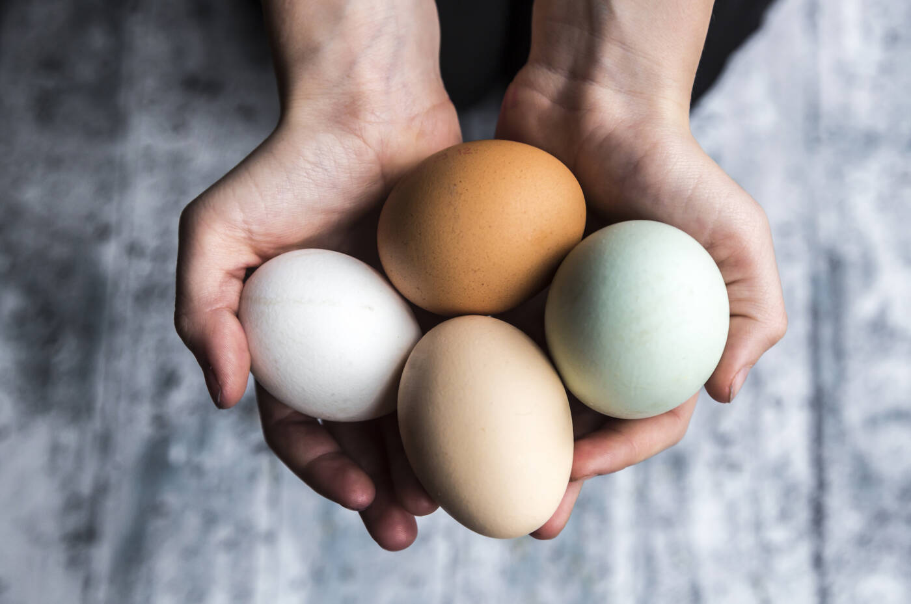
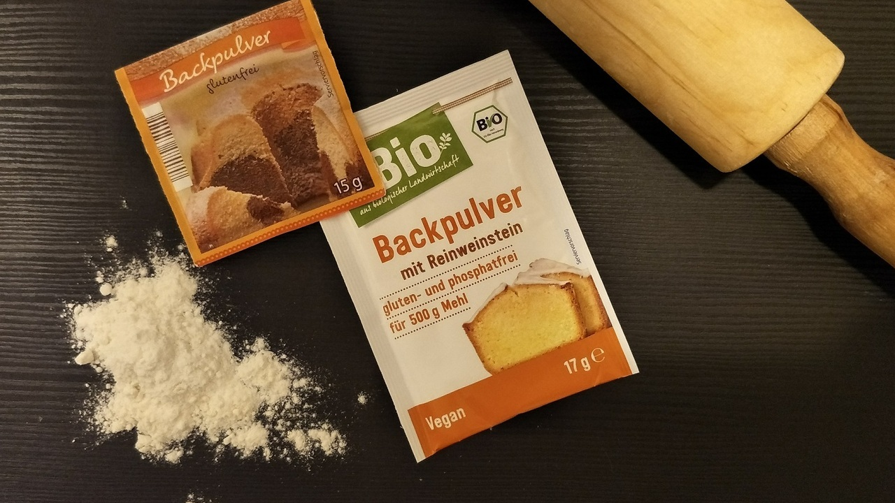
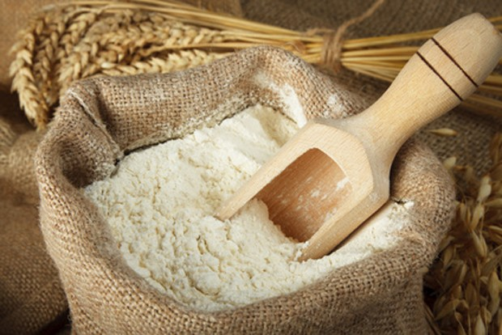
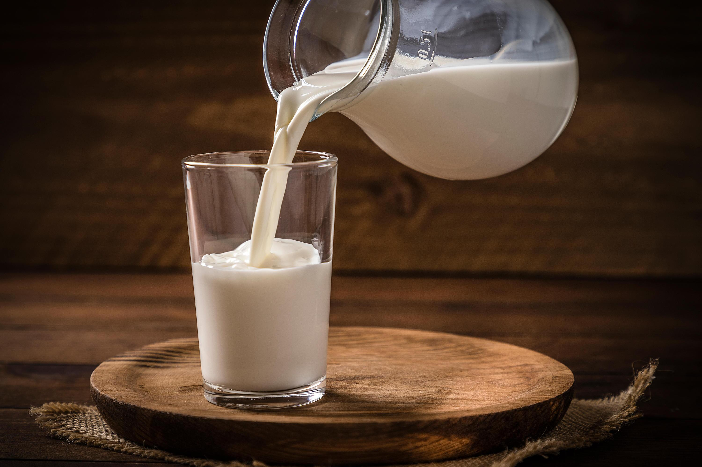
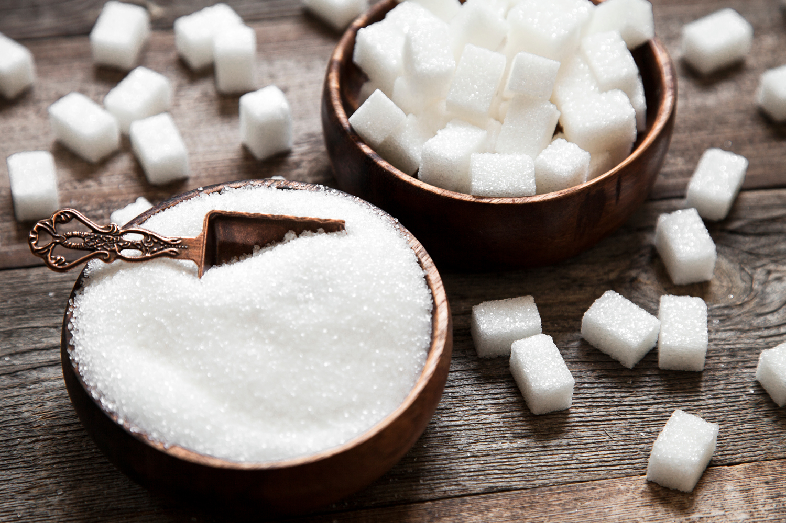
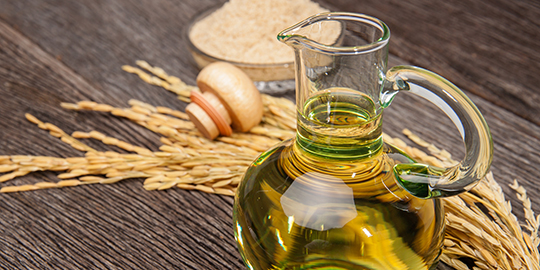
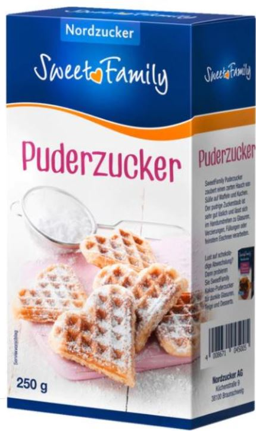
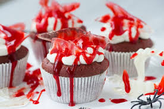
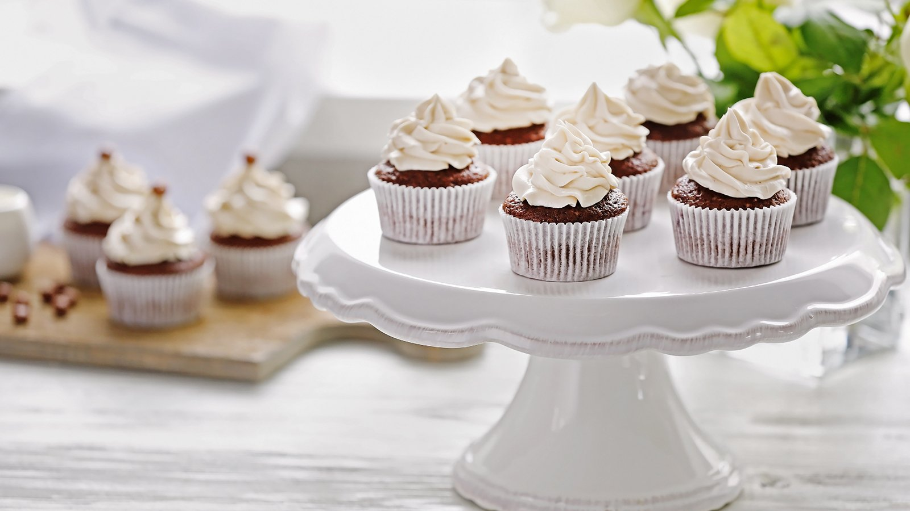

Muffins
Zutaten
-






1.
-
Als erstes den Ofen vorhizen bei 250°.
Eier aufschlagen und in gut mit Backpulver rühren bis es schaumt.
2.
-
Zucker hinzufügen uns stark rühren. Die Kristalle dann noch mit Milch mischen bis sich der
Zucker auflöst.
3.
-
Nach und nach Mehl dazu mischen bis der Teig dickflüssig ist.
4.
-
Schlusslich, ein wenig öl dazu mischen und den Teig in den Ofen für 1h bei 250° backen lassen.
Deko & Glassur
Zuataten: Glassur


Zubereitung
-
Mischne Sie beide Zutaten solang der Zucker sich auflöst und dickflüssig wird.
Giesen Sie die Glassur langsam auf ihre Muffins.
Varianten
-


Wo gibts was?
Muffin Zutaten
Wo gibts was?
Deko & Glassur Zutaten